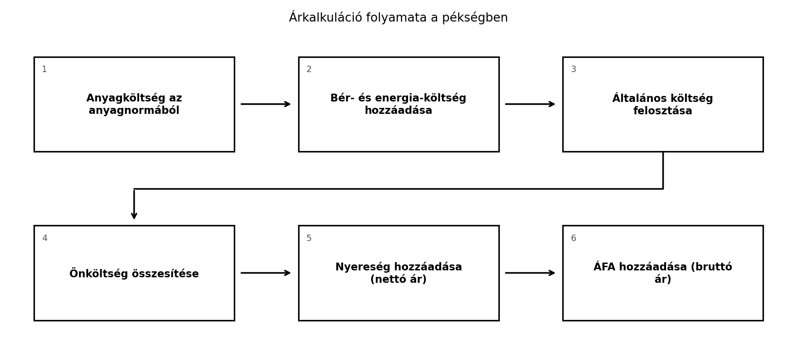

A reggeli műszakban a pék azt látja, hogy a kenyér gyorsan elfogy, a vevők elégedettek, a bevétel mégis kevés a számlákhoz képest. A tulajdonos megkérdezi: „Mennyibe kerül valójában egy kiló kenyér, és mennyiért kellene adnunk, hogy ne menjünk tönkre?” A pék a liszt árát ismeri, de az önköltség ennél sokkal több: benne van a bér, a gáz, a villany, a bérleti díj, a csomagolás és a gépek fenntartása is. Ha a termék árát csak a nyersanyagköltségből indulva állapítja meg, alááraz, és a pékség hosszú távon veszteségessé válik.
Ebben az alfejezetben megtanuljuk, hogyan épül fel a sütőipari termék önköltsége, hogyan számítjuk az anyagköltséget a receptúrából és a termékhozamból, hogyan osztjuk fel a bér-, energia- és általános költségeket, és hogyan képezünk nettó, majd bruttó fogyasztói árat ÁFÁ-val.
Képzeljük el a pékség havi költségeit három nagy dobozban. Az első dobozban a liszt, élesztő, só, zsiradék, cukor, töltelék és csomagolóanyag számlái vannak. A másodikban a dolgozók bére és a járulékok. A harmadikban a gáz-, villany-, vízszámla, a bérleti díj, a takarítás, a könyvelés és a gépek karbantartása. Az árkalkuláció úgy indul, hogy ezeket a dobozokat egyenként a termékre osztjuk.

Az ábra azt mutatja: először a termékhez közvetlenül mérhető anyag-, bér- és energiaköltséget határozzuk meg, majd rátesszük a közvetett általános költséget; így kapjuk az önköltséget. Ezután jön a nyereség, amivel megkapjuk a nettó eladási árat, végül az ÁFÁ-t hozzáadva a fogyasztói bruttó árat.
Definíció. Az önköltség egy darab termék vagy egy kilogramm termék előállításának, csomagolásának és értékesítésre kész állapotba hozásának a vállalkozásnál felmerült összes költsége pénzben kifejezve.
A sütőiparban az önköltséget általában Ft/db vagy Ft/kg mértékegységben használjuk. Az önköltség négy fő elemből áll:
ahol:
Az anyagköltség termékenként viszonylag pontosan mérhető a receptúrából. A bér és az energia részben közvetlenül mérhető, részben felosztással rendelhető a termékhez. Az általános költséget szinte mindig felosztani kell, mert nem lehet egyetlen cipóhoz hozzárendelni egy könyvelői bérszámlát.
Szabály. Az önköltségszámítás mindig termékegységre vonatkozzon, és mindig tüntessük fel, hogy a haszonkulcsot milyen alapra számoljuk.
A sütőipari anyagnorma lisztre vetített százalékban adja meg a receptúrát. Ezt a formát tanultuk a Százalékszámítás és a lisztre vetített (sütőipari) százalék alfejezetben. Az anyagköltség kiszámításához először érdemes 100 kg lisztre számolni, mert így a százalékértékek közvetlenül kg-ban adják az összetevő mennyiségét.
Ha az -edik nyersanyag lisztre vetített százaléka, pedig az egységára Ft/kg-ban (folyadékoknál Ft/l-ben vagy Ft/kg-ban, a sűrűség figyelembevételével), akkor 100 kg lisztre:
Fontos, hogy a liszt is beletartozik az összegzésbe, .
A 100 kg lisztből nem 100 kg késztermék lesz, hanem a tésztahozam és a veszteségek után a termékhozam szerinti mennyiség. A Tésztahozam, termékhozam, kihozatal és veszteségek alfejezetben definiált termékhozam az a késztermék-mennyiség kg-ban, amely 100 kg lisztből előáll. Egy kg késztermék anyagköltsége:
Ha a termék darabos, és a darab késztömege, akkor a 100 kg lisztre jutó darabszám:
és az egy darabra jutó anyagköltség:
A tésztatömeggel való osztás hibás, mert a sütési és hűlési veszteséget is figyelembe kell venni. Az Anyagnorma, rendelésből anyagszükséglet és dagasztásonkénti anyagmennyiség alfejezetben tanultakkal összhangban: a késztermék tömege kisebb a tészta tömegénél, ezért az anyagköltség egy kg késztermékre vetítve nagyobb, mint a tésztakilogrammra vetítve.
Példa 1 – kenyér anyagköltsége. Egy 1 kg-os búzakenyér anyagnormája:
| Nyersanyag | Lisztre vetített % | Mennyiség 100 kg liszthez (kg) | Egységár (Ft/kg) | Költség (Ft) |
|---|---|---|---|---|
| BL 80 liszt | 100 | 100 | 220 | 22 000 |
| Víz | 62 | 62 | 0,1 | 6,2 |
| Élesztő | 2 | 2 | 900 | 1 800 |
| Só | 2 | 2 | 80 | 160 |
| Összesen | 166 | 23 966,2 |
A példában a víz ára Ft/l, de a sűrűséget 1 kg/l-nek véve kg-ra számolunk. A termékhozam legyen a tésztatömeg 12%-os sütési és hűlési vesztesége utáni 146,08 kg késztermék 100 kg lisztből.
Az 1 kg-os kenyér anyagköltsége tehát kerekítve 164 Ft/db. A liszt ára önmagában 220 Ft/kg, de a termékbe 0,7 kg liszt kerül, ezért nem a teljes 220 Ft-ot kell egy cipóra számolni. Ez az anyagköltség még nem tartalmazza a bért, az energiát és az általános költséget.
Példa 2 – péksütemény anyagköltsége. Egy 60 g késztömegű vizes péksütemény anyagnormája:
| Nyersanyag | Lisztre vetített % | Mennyiség 100 kg liszthez (kg) | Egységár (Ft/kg) | Költség (Ft) |
|---|---|---|---|---|
| BL 55 liszt | 100 | 100 | 260 | 26 000 |
| Víz | 58 | 58 | 0,1 | 5,8 |
| Élesztő | 3 | 3 | 950 | 2 850 |
| Só | 1,8 | 1,8 | 80 | 144 |
| Zsiradék | 3 | 3 | 600 | 1 800 |
| Összesen | 165,8 | 30 799,8 |
A sütési és hűlési veszteség legyen a tésztatömegre vetítve 14%, így a termékhozam:
A 100 kg lisztből kapott darabszám:
Egy darab anyagköltsége:
A példákban szereplő árak és veszteségek tanulási példák; a valódi értékeket a beszerzési számlák és az üzemi technológiai lapok alapján kell meghatározni.
A bérköltség a bruttó bért és a munkáltatói járulékokat együtt jelenti. A pék tanulónak nem kell pontosan ismernie az adójogszabályt, de a kalkulációhoz tudnia kell: a vállalkozásnak a nettó bérnél többet kell kifizetnie a munkavállaló foglalkoztatásáért. A példákban ezért havi bér- és járulékköltséggel számolunk.
Ha a pékség egyetlen terméket gyártana, a havi bérköltséget elosztanánk a havi darabszámmal. A valóságban több termék készül, ezért a közvetlen bért lehetőleg termékenként mérjük (például a dagasztást végző pék óráit termékenként), a közvetett bért (műszakvezető, takarító) pedig felosztjuk.
Szabály. A felosztáshoz válasszunk vetítési alapot: például közvetlen munkaóra, gépóra, lisztfelhasználás vagy anyagköltség. Az általános költség felosztására a gyakorlatban rezsikulcsot számolunk.
A rezsikulcs képlete:
ahol a választott vetítési alap havi összege, például a havi anyagköltség. A termékre jutó általános költség:
Példa 3 – teljes önköltség. Folytassuk az 1. példa kenyerét. Egy kis pékség havi termelése 10 000 db 1 kg-os kenyér. Az anyagköltség az előző számítás szerint 164,1 Ft/db, tehát a havi anyagköltség:
A havi költségek:
A teljes havi költség:
Egy darabra:
Az általános költséget az anyagköltségre vetítve is feloszthatjuk:
Egy darabra az anyagköltség 164,1 Ft, ezért a rezsikulccsal számolt általános költség:
A bérköltség 900 000 / 10 000 = 90 Ft/db, az energia 350 000 / 10 000 = 35 Ft/db. Az önköltség így is:
Ez a példa azt mutatja, hogy ha az anyagköltség 164 Ft körül van, a teljes önköltség ennél több mint kétszer magasabb is lehet, mert a bér- és rezsiköltségek jelentősek.
Definíció. A nettó eladási ár az az ár, amelyet a vállalkozás az ÁFA nélkül kap a termékért. A bruttó ár a fogyasztó által fizetendő ár, amely az ÁFÁ-t is tartalmazza.
Definíció. A haszonkulcs a nyereség aránya. Kétféle alapra szokták vetíteni:
A két képlet nem ugyanazt az eredményt adja, ezért mindig ki kell mondani, melyiket használjuk.
Ha a haszonkulcs az önköltségre vetített, a nettó ár:
Ha a haszonkulcs a nettó árra vetített, akkor a nyereség: . A nettó ár felírható úgy is, hogy:
Ebből átrendezve:
A bruttó ár:
ahol az ÁFA-kulcs százalékban.
Figyelem. Az ÁFA nem része az önköltségnek, és nem is a vállalkozás bevétele. A vállalkozás a vevőtől beszedi, majd a szabályok szerint befizeti az államnak, miközben a beszerzéseihez kapcsolódó előzetes ÁFÁ-t levonhatja. Az önköltséget tehát mindig ÁFA nélkül, nettó módon számoljuk.
Előírás. A vállalkozásnak a számvitelről szóló törvény szerint költségeit, bevételeit és eredményét megbízható, valós összképet adó nyilvántartással kell vezetnie; az önköltségszámítás rendjét a vállalkozás számviteli politikája, illetve belső kalkulációs szabályzata határozza meg (ellenőrizendő: 2000. évi C. törvény a számvitelről, a vállalkozás belső számviteli politikája). Az ÁFA felszámításának és a számlán való feltüntetésének alapja az ÁFA-törvény; a konkrét termék áfakulcsa a termékbesorolástól függ, ezért minden kalkulációnál az aktuális kulcsot kell használni (ellenőrizendő: hatályos általános forgalmi adóról szóló törvény, NAV-tájékoztató, termékbesorolás). A példákban használt 27%-os áfakulcs tanulási példa; a pékáruk egy részére kedvezményes kulcs is vonatkozhat.
Példa 4 – árkalkuláció. A 3. példa szerint az 1 kg-os kenyér önköltsége 369,1 Ft/db. A vállalkozás 8% haszonkulcsot szeretne az önköltségre vetítve.
Nettó ár:
Kerekítve 399 Ft. A bruttó ár 27%-os ÁFÁ-val:
A fogyasztói ár tehát kerekítve 507 Ft. Az ÁFA összege:
Ha ugyanezt a 8%-os haszonkulcsot a nettó árra vetítve alkalmaznánk:
A bruttó ár:
A különbség ebben az esetben csak néhány forint, de nagyobb haszonkulcsnál és magasabb önköltségnél már jelentős lehet. Ezért a kalkulációban mindig rögzíteni kell a haszonkulcs alapját.
Figyelem – az ÁFA-kulcs. A fejezet számpéldái a számolási gyakorlatra az általános, 27%-os kulcsot használják (tanulási ÁFA-kulcs). A kenyérre és egyes sütőipari termékekre a hazai szabályozás kedvezményes kulcsot is előírhat (például 18%; ellenőrizendő: hatályos áfatörvény mellékletei, NAV-tájékoztató, a termék besorolása). A valós árképzésnél mindig a hatályos, termékre vonatkozó kulcsot kell használni. Összehasonlításul: a 399 Ft nettó ár 18%-os kulccsal Ft bruttó, 27%-kal 507 Ft; a kulcs tehát jelentősen módosítja a fogyasztói árat, a számítás menete viszont azonos.
Egy kisvárosi pékség a kenyér bruttó árát 399 Ft-ban állapította meg, mert a tulajdonos úgy látta, hogy az anyagköltség csak 164 Ft/db, és a többi terméken is van nyeresége. A könyvelő azonban kimutatta, hogy a kenyér teljes önköltsége 369 Ft/db. A 399 Ft-os bruttó árból az ÁFA levonása után:
Ez az összeg nem fedezte a 369,1 Ft önköltséget, tehát a pékség minden egyes eladott kenyéren körülbelül 55 Ft veszteséget termelt. A hiba oka az volt, hogy az árban csak az anyagköltséget vették figyelembe, a bért, az energiát és az általános költséget nem. A helyes ár az önköltségből és a kívánt haszonkulcsból indult volna. Ez az eset jól mutatja, miért nem elég a liszt árát ismerni.
A kalkuláció akkor megfelelő, ha:
Ha a nettó ár kisebb az önköltségnél, a termék veszteséges; ha egyenlő, akkor nulla eredményt ad; ha nagyobb, akkor nyereséges.
1. feladat (A) Sorold fel az önköltség négy fő elemét, és mindegyikre írj egy sütőipari példát.
2. feladat (A) Egy 70 g késztömegű péksütemény anyagnormája: liszt 100%, víz 60%, élesztő 2,5%, só 1,5%, cukor 5%, zsiradék 4%. Egységárak: liszt 240 Ft/kg, víz 0,1 Ft/l, élesztő 950 Ft/kg, só 80 Ft/kg, cukor 350 Ft/kg, zsiradék 650 Ft/kg. A termékhozam 140 kg/100 kg liszt. Számítsd ki az anyagköltséget 100 kg lisztre és egy darabra.
3. feladat (B) A 2. feladat termékéből havonta 80 000 darab készül. A havi közvetlen bérköltség 2 400 000 Ft, az energia 720 000 Ft, az általános költség 1 600 000 Ft. A csomagolás anyagköltsége 1,5 Ft/db. Mennyi a termék teljes önköltsége egy darabra?
4. feladat (B) Számítsd ki a 3. feladat termékének nettó és bruttó eladási árát, ha a vállalkozás 12% haszonkulcsot alkalmaz az önköltségre vetítve, és az ÁFA-kulcs 27% (tanulási példa).
5. feladat (C) Egy versenytárs hasonló péksüteményt bruttó 75 Ft-ért árul. A pékség vezetője szerint a saját termék anyagköltsége csak 20 Ft, ezért ennyiért is megérheti eladni. A teljes önköltség azonban 60 Ft/db. Számold ki a 75 Ft bruttó árból a nettó árat 27%-os ÁFÁ-val, és elemezd, miért téves a vezető érvelése.
6. feladat (D) – hibakereső Egy tanuló a péksütemény anyagköltségét a következőképpen számolta: az anyagköltség 100 kg lisztre 30 800 Ft, a tésztatömeg 165,8 kg/100 kg liszt. Így: 30 800 / 165,8 = 185,8 Ft/kg, majd 185,8 × 0,060 = 11,15 Ft/db. Mi a hiba, és mennyi a helyes anyagköltség, ha a termékhozam 142,6 kg/100 kg liszt?
Négy elem: anyagköltség (liszt, élesztő, só), bérköltség (pék, betanított dolgozó bére és járuléka), energiaköltség (kemence gáz, dagasztógép áram), általános költség (bérleti díj, takarítás, könyvelés, karbantartás).
100 kg lisztre az anyagmennyiségek: liszt 100 kg, víz 60 kg, élesztő 2,5 kg, só 1,5 kg, cukor 5 kg, zsiradék 4 kg.
Az anyagköltség:
Összesen: 24 000 + 6 + 2 375 + 120 + 1 750 + 2 600 = 30 851 Ft.
A 100 kg lisztre jutó darabszám:
Egy darabra:
Az anyagköltség 15,43 Ft/db, a csomagolás 1,5 Ft/db, így a teljes anyagköltség 16,93 Ft/db.
Önköltség:
12% haszonkulcs az önköltségre:
Bruttó ár 27%-os ÁFÁ-val:
A terméket kerekítve 108 Ft bruttó áron lehetne értékesíteni.
A 75 Ft-os bruttó árból a nettó ár:
A teljes önköltség 60 Ft/db, tehát:
A termék ezen az áron veszteséges. A vezető azért téved, mert csak az anyagköltséget nézi; a bér, energia, csomagolás és általános költség is a termékre terhelődik. A versenytárs alacsony ára lehet, hogy más gyártástechnológiából, nagyobb sorozatból vagy alacsonyabb minőségből adódik, de a saját önköltséget kell fedezni.
A tanuló a tésztatömeggel osztott, ezért nem vette figyelembe a sütési és hűlési veszteséget. A helyes számítás a termékhozammal:
Egy 60 g-os darabra:
A 11,15 Ft/db alulbecsült anyagköltséget adott volna; a különbség 1,81 Ft/db, ami havi 80 000 darabnál már 144 800 Ft.
Az önköltség a termékegységre jutó anyag-, bér-, energia- és általános költség összege. Az anyagköltséget a lisztre vetített anyagnormából 100 kg lisztre számoljuk, majd a termékhozammal osztva kapjuk az 1 kg-ra vagy 1 darabra jutó értéket. A bér- és energiaköltség lehet közvetlenül mért vagy felosztott; az általános költséget rezsikulccsal rendeljük a termékhez. A nettó eladási ár az önköltség és a kívánt nyereség összege; a haszonkulcsot mindig egyértelműen az önköltségre vagy a nettó árra vetítjük. A bruttó ár a nettó ár és az ÁFA összege. Az ÁFA nem önköltségelem. A pontos áfakulcs, járulékok és rezsikulcsok ellenőrzendők. Ezt a számítási logikát használjuk a vállalkozási formák és az eredménykimutatás tárgyalásánál (Vállalkozási formák, adózás, mérleg és eredménykimutatás), valamint a vizsgafelkészülés írásbeli feladataiban (A vizsga felépítése és az írásbeli számítási feladatok).